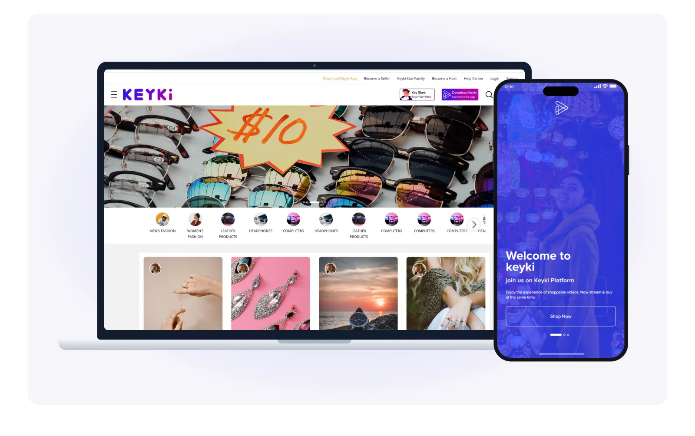
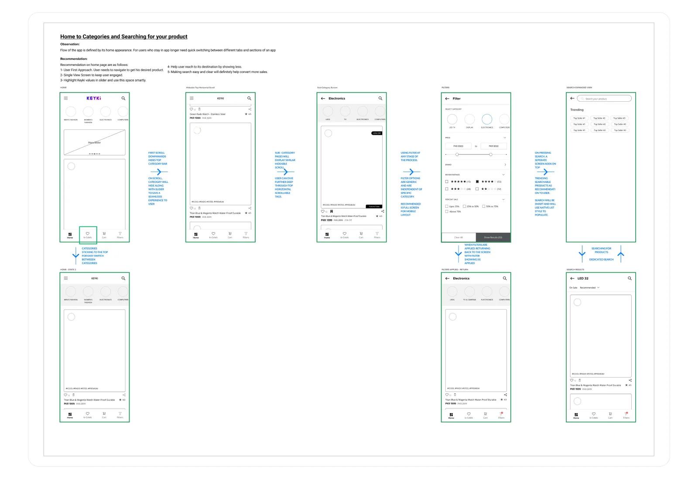
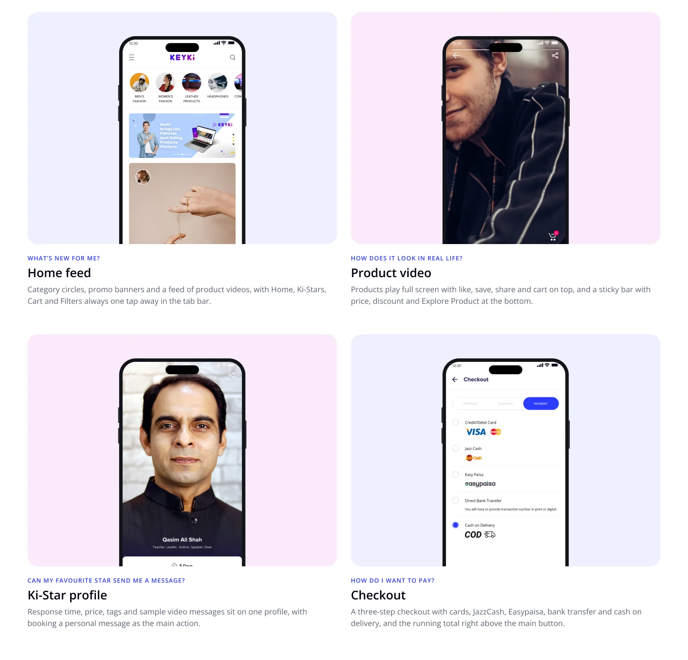
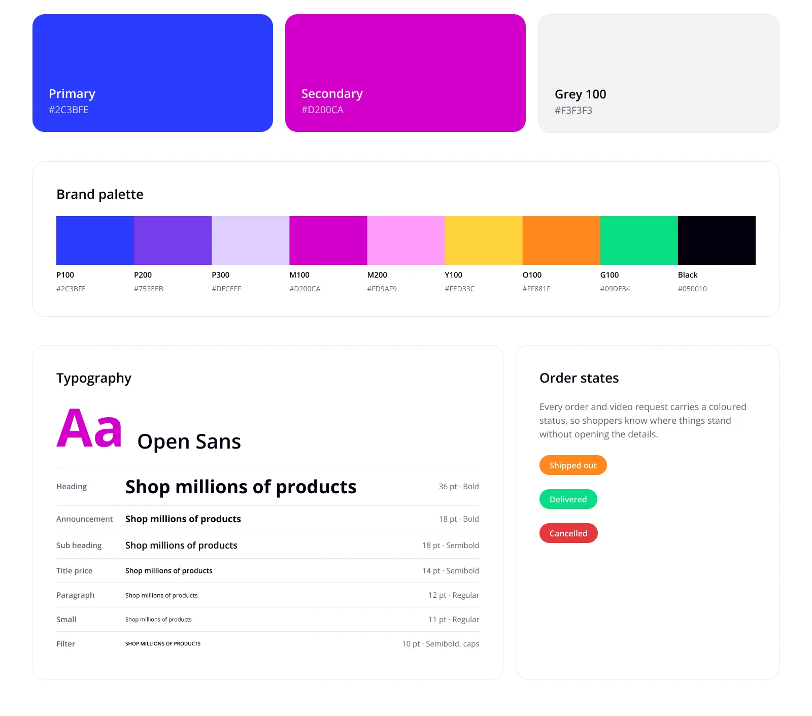
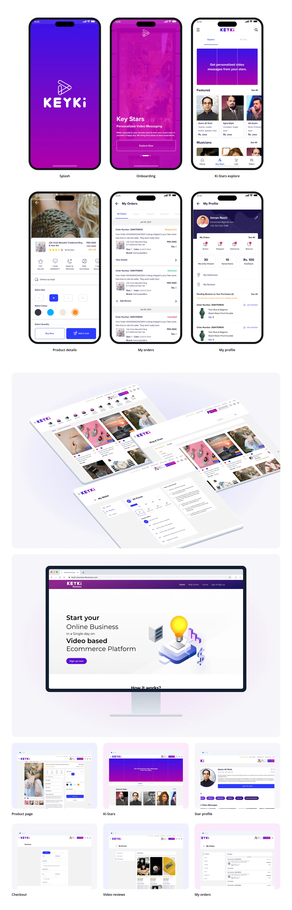

Keyki
A video-first shopping platform for Pakistan, where people discover products through short videos, book personal video messages from their favourite stars and check out in a few taps.
- Market
- Pakistan
- Platforms
- iOS, Android and web
- Product
- Shoppable video + Ki-Stars
- Deliverables
- Wireframes, user flows, app and web UI, style guide

The product
Keyki is an online shopping platform for Pakistan. Shoppers browse products as videos and images, shop by category, read written and video reviews, buy instantly and track every order. Its Ki-Stars side lets fans book personal video messages from celebrities, creators and influencers.
Static listings made it hard to judge a product, and harder to trust it.
Photos alone don’t show how something looks or fits in real life, reviews were mostly text, and shoppers had no link to the stars and creators they already follow.
Shoppable video on every screen.
Products open as full-screen videos with buying actions on top, Ki-Stars sells personal video messages, video reviews sit beside written ones, and one checkout covers cards, wallets, bank transfer and cash on delivery.
Video and commerce on one screen
Keyki had to feel like a video app and a shop at the same time, on a phone and on a desktop.
Keep buying within reach
Price, cart and Buy Now had to stay one tap away over a full-screen video, without covering the product itself.
Two journeys, one app
Buying a product and booking a star’s video message have different steps and order states, but needed to feel like one product.
Payments people actually use
Many shoppers pay with JazzCash, Easypaisa, bank transfer or cash on delivery, and don’t want to create an account before their first order.
From the home feed to a placed order
Annotated wireframe boards mapped every core journey: home to product, single and multi-product views, sign-in and checkout, star profiles and video requests, orders, returns, reviews, rewards and the help center.

From annotated wireframes to two platforms
Wireframe and annotate
Twenty wireframe boards paired each flow with an observation and a recommendation, from guest checkout with OTP to order tracking and video requests.
Design mobile first
High-fidelity iOS and Android screens were built on a shared UI style guide, component set and button library.
Scale to web and launch
The same patterns were adapted to a 1440px desktop site, Keyki Business pages for sellers, and app store screenshots and banners.
Four screens carry the work
Each mobile screen answers one question for a shopper.

Bold, playful and clear
Keyki’s electric blue and magenta come straight from the logo gradient and carry every action, while greys keep product images in focus. Proxima Nova sets headings and prices in the product, and Open Sans sets body text.

The finished interface

Ready for launch
The project took Keyki from annotated wireframes to a complete set of mobile and desktop designs, a business site for sellers and app store assets, giving shoppers in Pakistan a video-first way to discover and buy.
One system, two platforms
Home, product, Ki-Stars and checkout share the same components, colours and type on mobile and desktop, so Keyki feels the same everywhere.
Video at the centre
Product videos, personal star messages and video reviews make video the main way to judge a product, not an extra.
Built for local shoppers
Guest checkout with OTP, mobile wallets, bank transfer and cash on delivery, plus Kashback, coupons and rewards, fit how people in Pakistan shop online.